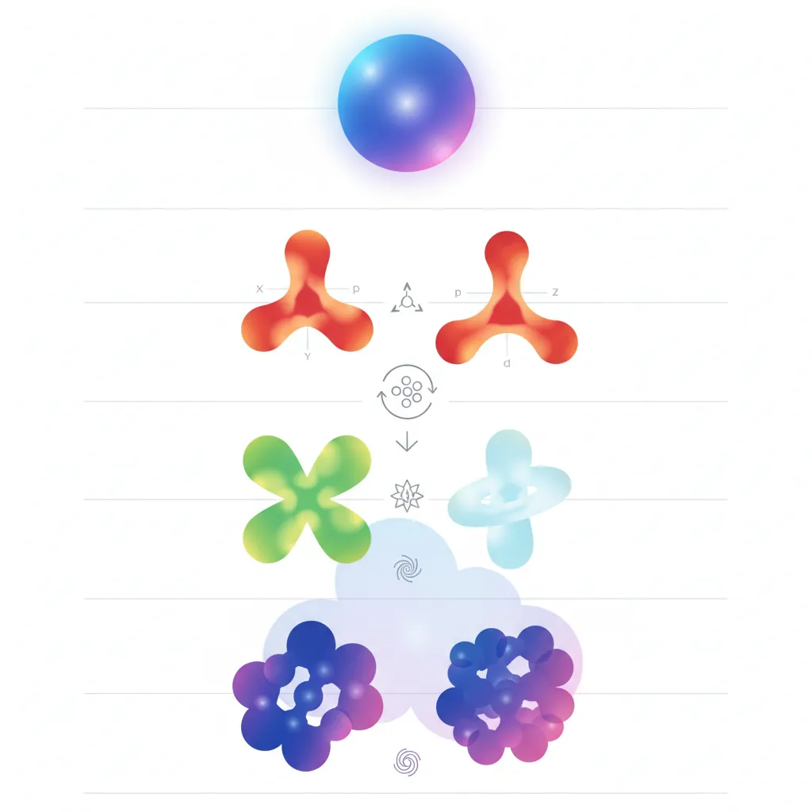
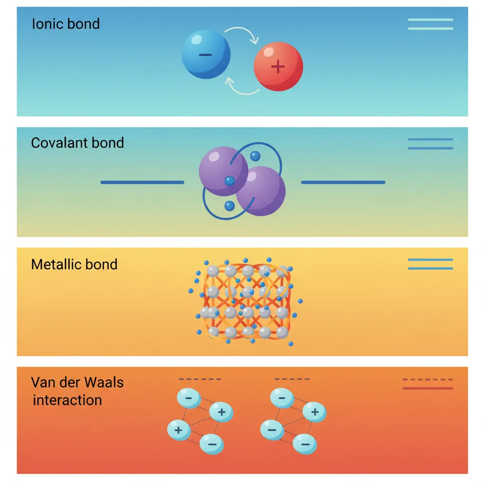
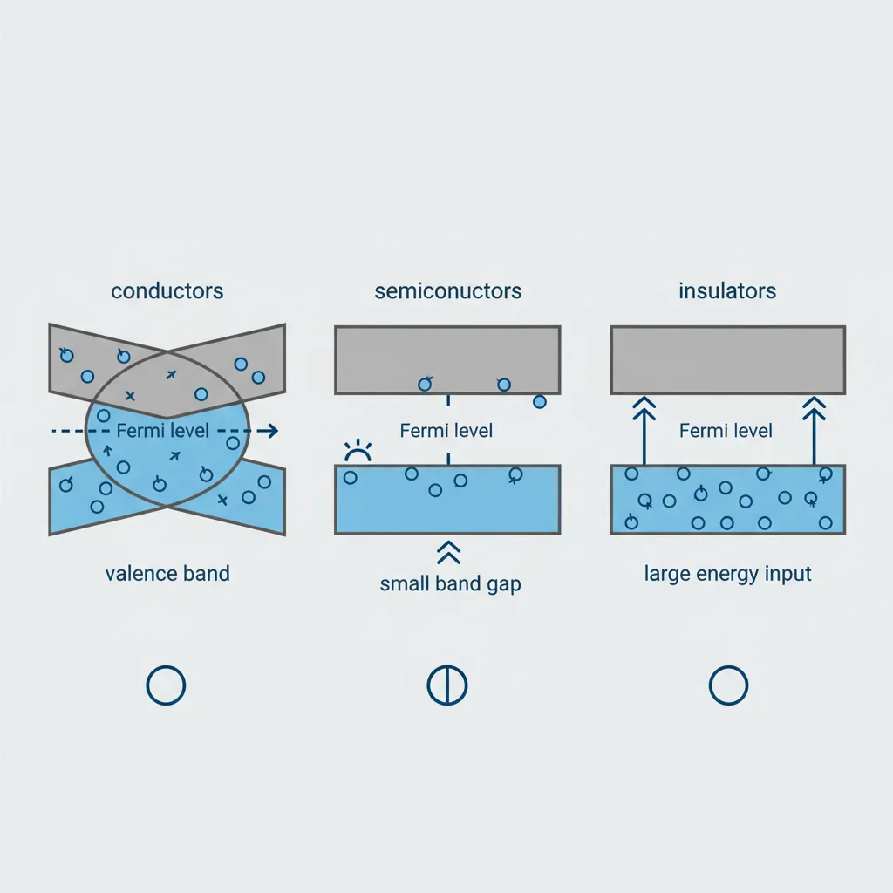
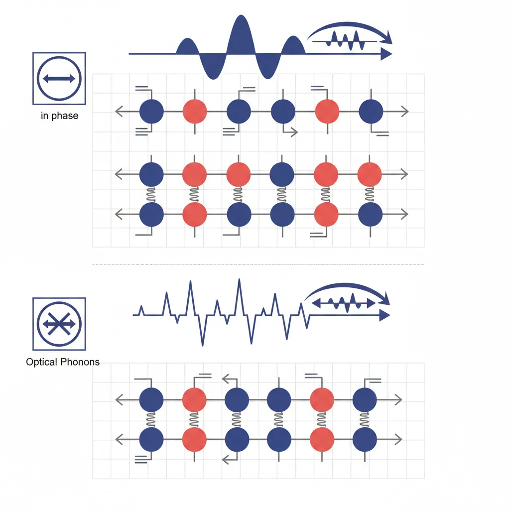
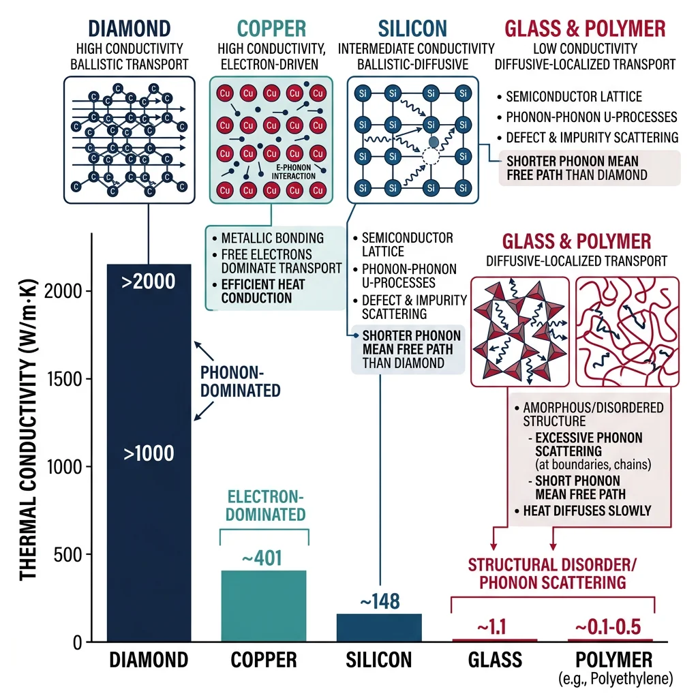

Quantum Mechanics for Materials
Materials Science Mastery
Atomic Structure & Quantum Foundations
Quantum mechanics, bonding, band theory, Fermi energy, phononsCrystal Structures, Defects & Diffusion
FCC/BCC/HCP, Miller indices, dislocations, phase diagrams, Fick's lawsMetals & Alloys
Iron-carbon diagram, steels, aluminum, titanium, superalloys, heat treatmentPolymers & Soft Materials
Polymer chemistry, thermoplastics, viscoelasticity, rheology, biopolymersCeramics, Glass & Composites
Oxide ceramics, toughening, fiber-reinforced composites, interfacial bondingMechanical Behavior & Testing
Stress-strain, hardness, fatigue, fracture toughness, nanoindentationFailure Analysis & Reliability Engineering
Fractography, corrosion, tribology, root cause analysisNanomaterials & Smart Materials
Nanotubes, graphene, piezoelectrics, shape memory alloys, self-healingMaterials Characterization Techniques
XRD, SEM, TEM, AFM, DSC, TGA, spectroscopyThermodynamics & Kinetics of Materials
Gibbs free energy, CALPHAD, phase stability, solidificationElectronic, Magnetic & Optical Materials
Semiconductors, photovoltaics, dielectrics, superconductorsBiomaterials
Implants, biocompatibility, tissue engineering, drug deliveryEnergy Materials
Battery materials, hydrogen storage, fuel cells, nuclear materialsComputational Materials Science
DFT, molecular dynamics, FEM, materials informatics, AIEvery material you've ever touched — the steel in a bridge, the silicon in your phone, the collagen in your bones — owes its properties to what happens at the atomic scale. To truly understand why materials behave as they do, we must start with the quantum mechanics that governs electrons, their configurations, and the bonds they form. Think of this chapter as learning the alphabet before writing novels: these fundamentals will echo through every subsequent topic in our series.

The Schrödinger equation is the master equation of quantum mechanics. For a single electron, it takes the form:
$\hat{H}\psi = E\psi$
- $\hat{H}$ (Hamiltonian): The total energy operator — kinetic energy + potential energy
- $\psi$ (wave function): Describes the probability amplitude of finding an electron at a given point in space. $|\psi|^2$ gives the probability density
- $E$ (eigenvalue): The allowed energy of the system — quantized, not continuous
Analogy — The Guitar String: Imagine plucking a guitar string fixed at both ends. Only certain standing wave patterns (harmonics) are allowed — you can't have half a wave that doesn't fit between the endpoints. Similarly, electrons in atoms can only occupy certain allowed energy states (orbitals). The "boundary conditions" of the atom — its nuclear charge and the repulsion from other electrons — determine which wave patterns (wave functions) are permitted.
For the hydrogen atom, solving the Schrödinger equation exactly gives us the familiar atomic orbitals — 1s, 2s, 2p, 3d, and so on. Each orbital is characterized by three quantum numbers:
- $n$ (principal): Determines energy level and average distance from nucleus (1, 2, 3, ...)
- $l$ (angular momentum): Determines orbital shape (0=s, 1=p, 2=d, 3=f)
- $m_l$ (magnetic): Determines orbital orientation in space (-l to +l)
- $m_s$ (spin): Electron spin — +½ or -½ (Pauli exclusion: no two electrons share all four numbers)
Case Study: Hydrogen Atom Energy Levels
The energy levels of hydrogen follow $E_n = -13.6 / n^2$ eV. The negative sign means the electron is bound to the nucleus. As $n$ increases, energy approaches zero (ionization). This simple formula explains hydrogen's emission spectrum — when an electron drops from $n=3$ to $n=2$, it emits a photon at 656 nm (red light), which is why hydrogen gas glows reddish in discharge tubes. This same quantum logic scales to every element in the periodic table, though multi-electron atoms require more sophisticated treatment.
import numpy as np
import matplotlib.pyplot as plt
# Hydrogen atom energy levels
n_values = np.arange(1, 7)
energies = -13.6 / n_values**2 # Energy in eV
# Plot energy level diagram
fig, ax = plt.subplots(figsize=(8, 6))
for n, E in zip(n_values, energies):
ax.hlines(E, 0.3, 0.7, colors='navy', linewidth=2)
ax.text(0.75, E, f'n={n} ({E:.2f} eV)', va='center', fontsize=10)
# Show a transition (n=3 -> n=2, Balmer H-alpha)
ax.annotate('', xy=(0.5, energies[1]), xytext=(0.5, energies[2]),
arrowprops=dict(arrowstyle='->', color='red', lw=2))
ax.text(0.52, (energies[1]+energies[2])/2, 'H-α (656 nm)', color='red', fontsize=9)
ax.set_xlim(0, 1.2)
ax.set_ylabel('Energy (eV)')
ax.set_title('Hydrogen Atom Energy Levels')
ax.set_xticks([])
plt.tight_layout()
plt.show()
Electron Configuration & Periodic Trends
Understanding how electrons fill orbitals is the key to predicting virtually every chemical and physical property of an element. The filling order follows the Aufbau principle (German for "building up"): electrons occupy the lowest available energy state first. Combined with Hund's rule (maximize spin multiplicity within a subshell) and the Pauli exclusion principle (no two electrons share all four quantum numbers), these three rules let us write the electron configuration of any element.
- Atomic radius: Decreases left-to-right (more protons pull electrons closer), increases top-to-bottom (new shells). Controls bond lengths and lattice parameters
- Ionization energy: Energy to remove an electron. High IE means the element holds its electrons tightly — noble gases have the highest. Explains why metals (low IE) easily lose electrons to form metallic bonds
- Electronegativity: Tendency to attract shared electrons. Fluorine is the most electronegative. The difference in electronegativity between two atoms determines bond character — large difference = ionic, small = covalent
- Electron affinity: Energy released when an atom gains an electron. Halogens have high EA, making them excellent electron acceptors in ionic compounds like NaCl
Why This Matters for Materials: The d-block transition metals (Fe, Cu, Ni, Ti) have partially filled d-orbitals that create the rich chemistry behind alloys, catalysis, and magnetism. Iron's [Ar] 3d⁶ 4s² configuration enables it to exist as Fe²⁺ or Fe³⁺, which is why rust (Fe₂O₃) and magnetite (Fe₃O₄) have different properties. Similarly, copper's [Ar] 3d¹⁰ 4s¹ (anomalous configuration — stealing an electron from 4s to complete the 3d shell) explains its excellent electrical conductivity.
import numpy as np
import matplotlib.pyplot as plt
# Electronegativity values (Pauling scale) for Period 3
elements = ['Na', 'Mg', 'Al', 'Si', 'P', 'S', 'Cl']
electroneg = [0.93, 1.31, 1.61, 1.90, 2.19, 2.58, 3.16]
atomic_num = [11, 12, 13, 14, 15, 16, 17]
fig, ax = plt.subplots(figsize=(8, 5))
bars = ax.bar(elements, electroneg, color=['#3B9797' if e < 2.0 else '#BF092F' for e in electroneg])
ax.set_ylabel('Electronegativity (Pauling Scale)')
ax.set_xlabel('Element')
ax.set_title('Electronegativity Across Period 3')
ax.axhline(y=2.0, color='gray', linestyle='--', alpha=0.5, label='Metal/Nonmetal boundary')
ax.legend()
for bar, val in zip(bars, electroneg):
ax.text(bar.get_x() + bar.get_width()/2, bar.get_height() + 0.05,
f'{val:.2f}', ha='center', va='bottom', fontsize=9)
plt.tight_layout()
plt.show()
Interatomic Potentials
Before atoms bond, they interact through forces that depend on the distance between them. The interatomic potential describes how the energy of a two-atom system changes with separation distance $r$. Think of it like two magnets: bring them too close and they repel; hold them at just the right distance and they attract; pull them apart and the attraction weakens.
The most commonly used model is the Lennard-Jones (6-12) potential:
$V(r) = 4\varepsilon \left[\left(\frac{\sigma}{r}\right)^{12} - \left(\frac{\sigma}{r}\right)^{6}\right]$
- $\varepsilon$ (well depth): The strength of the attraction — deeper well = stronger bond
- $\sigma$ (collision diameter): Distance at which potential energy is zero
- $r^{-12}$ term (repulsive): Models Pauli exclusion — electron clouds can't overlap
- $r^{-6}$ term (attractive): Models van der Waals attraction between induced dipoles
- Equilibrium distance $r_0 = 2^{1/6}\sigma$: The bond length where energy is minimized
Materials Connection: The depth of the potential well directly correlates with the material's melting point and stiffness. Diamond (deep, narrow well from strong covalent bonds) has a melting point of ~3,550°C and extreme hardness. Lead (shallow well from weak metallic bonds) melts at just 327°C and is soft. The curvature of the well at its minimum determines the elastic modulus — a stiffer spring (steeper curve) means a stiffer material.
import numpy as np
import matplotlib.pyplot as plt
# Lennard-Jones potential
sigma = 3.4e-10 # collision diameter (m), typical for argon
epsilon = 1.65e-21 # well depth (J), typical for argon
r = np.linspace(3.0e-10, 8.0e-10, 500)
V = 4 * epsilon * ((sigma/r)**12 - (sigma/r)**6)
# Convert to more intuitive units
r_angstrom = r * 1e10
V_meV = V / 1.602e-22 # Convert J to meV
fig, ax = plt.subplots(figsize=(8, 5))
ax.plot(r_angstrom, V_meV, 'b-', linewidth=2)
ax.axhline(y=0, color='gray', linestyle='--', alpha=0.5)
# Mark equilibrium distance
r_eq = sigma * 2**(1/6)
ax.axvline(x=r_eq*1e10, color='red', linestyle=':', alpha=0.7, label=f'r₀ = {r_eq*1e10:.2f} Å')
ax.axhline(y=-epsilon/1.602e-22, color='green', linestyle=':', alpha=0.7, label=f'ε = {epsilon/1.602e-22:.1f} meV')
ax.set_xlabel('Distance r (Å)')
ax.set_ylabel('Potential Energy (meV)')
ax.set_title('Lennard-Jones Interatomic Potential (Argon)')
ax.set_ylim(-150, 300)
ax.legend()
plt.tight_layout()
plt.show()
For more realistic materials modeling, other potentials are used: the Morse potential (better for diatomic molecules), Embedded Atom Method (EAM) for metals, and Born-Mayer for ionic crystals. These will become critical in Part 14: Computational Materials Science when we discuss molecular dynamics simulations.
Chemical Bonding
Atoms rarely exist in isolation. They bond with other atoms to achieve lower-energy, more stable configurations. The type of bond formed determines virtually every property of the resulting material — its strength, conductivity, transparency, melting point, and even color. Understanding bonding is like understanding the glue that holds the material world together.

The Four Primary Bond Types — At a Glance
| Bond Type | Mechanism | Strength | Example Materials |
|---|---|---|---|
| Ionic | Electron transfer (cation + anion) | Strong (600-1500 kJ/mol) | NaCl, MgO, Al₂O₃ |
| Covalent | Electron sharing (directional) | Very Strong (150-1100 kJ/mol) | Diamond, SiC, Si₃N₄ |
| Metallic | Electron sea (delocalized) | Variable (68-850 kJ/mol) | Fe, Cu, Al, W |
| Van der Waals | Dipole interactions (induced/permanent) | Weak (0.05-40 kJ/mol) | Polymers, graphite layers, ice |
Ionic Bonding occurs when one atom (typically a metal with low ionization energy) transfers one or more electrons to another atom (typically a nonmetal with high electron affinity). Sodium (Na) gives its single 3s electron to chlorine (Cl), creating Na⁺ and Cl⁻ ions. These oppositely charged ions attract each other electrostatically, forming the crystal lattice of table salt. The bond is non-directional — each Na⁺ attracts all surrounding Cl⁻ ions equally — which is why ionic crystals tend to form regular, symmetric structures.
Covalent Bonding involves the sharing of electrons between atoms with similar electronegativities. In diamond, each carbon atom shares one electron with each of four neighbors through sp³ hybridized orbitals, creating an incredibly rigid three-dimensional network. The bond is directional — the electron cloud is concentrated between the bonded atoms — which gives covalent materials their characteristic hardness and brittleness. Silicon carbide (SiC), used in bulletproof vests and grinding discs, derives its extreme hardness from strong Si—C covalent bonds.
Glass (SiO₂) is held together by directional covalent/ionic bonds. When you bend it, you're trying to stretch or compress specific bonds at fixed angles — they resist and eventually snap catastrophically. Copper has metallic bonds where electrons are delocalized in a "sea." When you bend copper, atoms can slide past each other while remaining held by the electron sea — the bonds are non-directional, allowing plastic deformation. This single difference in bonding — directional vs. non-directional — explains why ceramics are brittle and metals are ductile.
Metallic Bonding
Metallic bonding is unique: the valence electrons are not localized between specific atom pairs but instead form a "sea" or "gas" of delocalized electrons shared by all atoms in the crystal. Each metal atom donates its valence electrons to this communal pool, leaving behind positively charged ion cores arranged in a regular lattice. The attraction between the positive cores and the negative electron sea holds the structure together.
Analogy — The Dance Floor: Imagine a ballroom where everyone has placed their jackets (valence electrons) in a communal coat check. The dancers (ion cores) are arranged in neat rows, and the pile of jackets (electron sea) fills the room evenly, attracting all dancers equally. If you push one row of dancers to the side, they can rearrange smoothly because the coats don't belong to anyone in particular — this is why metals can deform plastically without breaking.
- Electrical conductivity: Free electrons can move through the lattice under an applied voltage — copper conducts because its 4s¹ electron is completely delocalized
- Thermal conductivity: Free electrons also carry thermal energy — this is why metals feel cold to the touch (they conduct heat away from your skin quickly)
- Ductility & malleability: Non-directional bonding allows planes of atoms to slide without breaking bonds
- Luster: Free electrons absorb and re-emit photons of all visible wavelengths, giving metals their characteristic shine
- High melting points (transition metals): More valence electrons = stronger metallic bond. Tungsten (W) has the highest melting point (3,422°C) of any metal due to strong d-orbital participation in bonding
Van der Waals & Hydrogen Bonding
Not all bonding involves transferring or sharing electrons. Van der Waals forces are weak, secondary interactions that arise from temporary or permanent electric dipoles. Though individually weak, they collectively govern the behavior of polymers, biological molecules, and layered materials like graphite.
There are three types of van der Waals interactions, in decreasing order of strength:
- Hydrogen bonding (10-40 kJ/mol): A special case where hydrogen bonded to N, O, or F creates a strong permanent dipole. Explains why water (H₂O) has an anomalously high boiling point (100°C) compared to H₂S (-60°C) — without hydrogen bonds, life as we know it wouldn't exist
- Dipole-dipole (5-25 kJ/mol): Permanent dipoles in polar molecules like HCl attract each other. The positive end of one molecule aligns with the negative end of another
- London dispersion (0.05-2 kJ/mol per interaction): Even in nonpolar atoms, random fluctuations in electron distribution create instantaneous dipoles that induce dipoles in neighbors. These scale with the number of electrons — explaining why heavier noble gases (Xe, bp -108°C) have higher boiling points than lighter ones (He, bp -269°C)
Case Study: Why Graphite Is a Lubricant but Diamond Is the Hardest Material
Both diamond and graphite are pure carbon, yet their properties couldn't be more different — entirely because of bonding. In diamond, each carbon forms four strong covalent bonds in a 3D tetrahedral network. In graphite, each carbon forms three covalent bonds in flat hexagonal sheets (graphene layers), with the fourth electron delocalized above and below the plane. The sheets are held together only by weak van der Waals forces (~7 kJ/mol). This means the sheets slide easily over each other — making graphite an excellent dry lubricant used in locks and industrial machinery. Meanwhile, diamond's 3D covalent network makes it the hardest known natural material (10 on the Mohs scale).
Industry Impact: Graphite's layered structure is also why it's used as an electrode material in lithium-ion batteries — lithium ions can intercalate (insert) between the graphene layers during charging.
import numpy as np
# Compare bond energies across bonding types
bond_types = {
'C-C (Diamond, covalent)': 346,
'Si-O (Glass, covalent)': 452,
'Na-Cl (Salt, ionic)': 786, # lattice energy per mol
'Fe metallic bond': 418,
'H-bond in water': 20,
'Van der Waals (graphite layers)': 7,
}
print("Bond Energies in Materials")
print("=" * 50)
for bond, energy in sorted(bond_types.items(), key=lambda x: x[1], reverse=True):
bar = '█' * (energy // 15)
print(f"{bond:40s} {energy:6d} kJ/mol {bar}")
Band Theory & Electronic Structure
Individual atoms have discrete energy levels (1s, 2s, 2p, ...). But when billions of atoms come together in a solid, something remarkable happens: those discrete levels broaden into nearly continuous bands of allowed energies. The gaps between these bands — and how electrons fill them — determine whether a material is a conductor, semiconductor, or insulator.
Analogy — The Stadium Seating: Imagine a single atom as a house with distinct floors (energy levels). Now imagine an entire city of houses (a crystal). Each "floor" blurs into a broad band, like individual seats merging into sections of a stadium. The lowest section (valence band) is fully occupied — everyone is sitting. The upper section (conduction band) is empty — available seats. The gap between sections (band gap) determines how hard it is for someone to "jump up" (for an electron to conduct).

- Conductors (metals): No band gap — valence and conduction bands overlap. Electrons move freely. Examples: Cu, Al, Ag
- Semiconductors: Small band gap (0.1-4 eV). Electrons can be excited across the gap by thermal energy or light. Examples: Si (1.1 eV), GaAs (1.4 eV), GaN (3.4 eV)
- Insulators: Large band gap (>4 eV). Virtually no electrons can cross at room temperature. Examples: Diamond (5.5 eV), SiO₂ (9 eV), Al₂O₃ (8.8 eV)
The Fermi level ($E_F$) is the energy at which the probability of an electron occupying a state is exactly 50% at absolute zero. In metals, $E_F$ lies within a band, so there are always available states for conduction. In semiconductors, $E_F$ lies in the band gap, and the carrier concentration depends exponentially on temperature and doping.
Case Study: How Silicon Powers the Modern World
Pure silicon is a poor conductor at room temperature — only about 1 in every 10 billion silicon atoms has enough thermal energy to promote an electron across the 1.1 eV band gap. But add just 1 phosphorus atom per million silicon atoms (n-type doping), and conductivity increases by a factor of 100,000. This is because phosphorus has 5 valence electrons vs. silicon's 4 — the extra electron sits just below the conduction band (only ~0.045 eV away), making it trivially easy to promote.
This ability to precisely control conductivity through doping is the foundation of every transistor, LED, and solar cell. The global semiconductor industry ($580 billion in 2024) exists because of band theory.
import numpy as np
import matplotlib.pyplot as plt
# Fermi-Dirac distribution at different temperatures
E = np.linspace(-0.3, 0.3, 500) # Energy relative to Fermi level (eV)
kB = 8.617e-5 # Boltzmann constant in eV/K
temperatures = [100, 300, 600, 1200] # Kelvin
colors = ['#132440', '#16476A', '#3B9797', '#BF092F']
fig, ax = plt.subplots(figsize=(8, 5))
for T, color in zip(temperatures, colors):
f_E = 1 / (np.exp(E / (kB * T)) + 1)
ax.plot(E, f_E, color=color, linewidth=2, label=f'T = {T} K')
ax.axvline(x=0, color='gray', linestyle='--', alpha=0.5, label='Fermi Level (E_F)')
ax.set_xlabel('Energy - E_F (eV)')
ax.set_ylabel('Occupation Probability f(E)')
ax.set_title('Fermi-Dirac Distribution at Different Temperatures')
ax.legend()
ax.set_ylim(-0.05, 1.05)
plt.tight_layout()
plt.show()
Density of States
The density of states (DOS), $g(E)$, tells us how many allowed quantum states exist at each energy level. It's analogous to seating capacity at each row of a stadium: even if a row exists, it matters whether it has 10 seats or 10,000 seats. The DOS determines how many electrons can occupy a given energy range and therefore governs electronic, thermal, and optical properties.
For a free electron gas in 3D (a simple model for metals), the DOS follows a square-root dependence: $g(E) = \frac{4\pi(2m)^{3/2}}{h^3} \sqrt{E}$, which means more states are available at higher energies. In real materials, the DOS is modified by the crystal structure and atomic potentials, creating peaks (van Hove singularities) and gaps.
- Catalysis: A high DOS near the Fermi level means many electrons are available for bonding with adsorbates — platinum's d-band DOS peaks near $E_F$, making it an excellent catalyst
- Superconductivity: BCS theory says the critical temperature $T_c$ depends on $g(E_F)$ — higher DOS at the Fermi level = higher $T_c$
- Thermoelectrics: A sharp peak in DOS near $E_F$ (like in Bi₂Te₃) enhances the Seebeck coefficient, improving waste heat recovery
Fermi Energy & Fermi Surfaces
At absolute zero, electrons fill all available states from the bottom up, like water filling a bowl. The Fermi energy $E_F$ is the energy of the highest occupied state — the "water level." For copper, $E_F \approx 7$ eV, which corresponds to electrons moving at about 1.6 million m/s — far faster than thermal velocities, because this energy comes from quantum mechanical requirements (Pauli exclusion), not temperature.
In three-dimensional momentum space (k-space), the surface of constant energy $E = E_F$ is called the Fermi surface. For a free electron gas, it's a perfect sphere. For real metals, the crystal lattice distorts it into complex shapes: copper's Fermi surface has "necks" touching the first Brillouin zone boundaries, which affects how electrons scatter and conduct. The shape of the Fermi surface determines a metal's anisotropic conductivity, magnetoresistance, and even the de Haas-van Alphen oscillations measured in experiments.
import numpy as np
# Calculate Fermi energy for different metals
# E_F = (hbar^2 / 2m) * (3 * pi^2 * n)^(2/3)
hbar = 1.055e-34 # J·s
m_e = 9.109e-31 # kg
eV = 1.602e-19 # J
metals = {
'Copper (Cu)': {'n': 8.49e28, 'valence': 1},
'Silver (Ag)': {'n': 5.86e28, 'valence': 1},
'Gold (Au)': {'n': 5.90e28, 'valence': 1},
'Aluminum (Al)': {'n': 18.1e28, 'valence': 3},
'Sodium (Na)': {'n': 2.65e28, 'valence': 1},
}
print(f"{'Metal':<20s} {'n (m⁻³)':<12s} {'E_F (eV)':<10s} {'v_F (m/s)':<12s}")
print("=" * 58)
for name, props in metals.items():
n = props['n']
E_F = (hbar**2 / (2*m_e)) * (3 * np.pi**2 * n)**(2/3)
v_F = np.sqrt(2 * E_F / m_e)
print(f"{name:<20s} {n:.2e} {E_F/eV:<10.2f} {v_F:.2e}")
Phonons & Frontier Materials
So far we've focused on electrons, but atoms themselves vibrate around their equilibrium positions. These vibrations are quantized — just as light comes in packets called photons, lattice vibrations come in packets called phonons. Phonons govern a material's thermal conductivity, heat capacity, thermal expansion, and even superconductivity (in conventional superconductors, electron-phonon coupling is the mechanism).
Analogy — The Crowd Wave: Imagine a stadium of fans doing "the wave." Each person (atom) moves up and down in their seat (vibrates around equilibrium), but the wave pattern propagates through the stadium. A phonon is the quantum of this collective wave — it has a definite frequency, wavelength, and momentum, even though no single atom travels anywhere.

- Acoustic phonons: Neighboring atoms move in phase (like sound waves). Three branches: one longitudinal (LA) and two transverse (TA). Dominate heat conduction at low temperatures
- Optical phonons: Neighboring atoms in a unit cell move out of phase (oppositely). Called "optical" because they interact strongly with infrared light. These carry less heat but are important for IR absorption and Raman spectroscopy
The thermal conductivity of a material depends on how effectively phonons can transport energy. In diamond, the light carbon atoms and stiff bonds create high-frequency phonons that scatter very little, giving diamond the highest thermal conductivity of any natural material (~2,200 W/m·K). In amorphous materials like glass, the disordered structure scatters phonons in every direction, resulting in low thermal conductivity (~1 W/m·K) — which is why glass is used for insulation.

Case Study: Debye Model & Specific Heat
The Debye model treats phonons as having a maximum frequency $\omega_D$ (the Debye cutoff). It predicts that heat capacity $C_V \propto T^3$ at low temperatures (the "Debye T-cubed law") and approaches the classical value $3R$ per mole of atoms at high temperatures (the Dulong-Petit limit). The Debye temperature $\Theta_D$ separates these regimes: for diamond, $\Theta_D = 2,230$ K, meaning quantum effects persist to very high temperatures. For lead, $\Theta_D = 105$ K, so it behaves classically above about 100 K.
Engineering Application: Cryogenic engineers designing satellite instruments must account for the T³ behavior of heat capacity — at 4 K, the heat capacity of aluminum is about 10,000 times smaller than at 300 K, which means cryogenic structures cool unevenly and can crack from thermal stress.
import numpy as np
import matplotlib.pyplot as plt
from scipy.integrate import quad
# Debye model for heat capacity
def debye_cv(T, theta_D):
"""Calculate C_v/3R using Debye model."""
if T == 0:
return 0
x_D = theta_D / T
integrand = lambda x: (x**4 * np.exp(x)) / (np.exp(x) - 1)**2
integral, _ = quad(integrand, 0, x_D)
return 9 * (T / theta_D)**3 * integral
# Materials with different Debye temperatures
materials = {
'Diamond': {'theta_D': 2230, 'color': '#132440'},
'Silicon': {'theta_D': 645, 'color': '#16476A'},
'Copper': {'theta_D': 343, 'color': '#3B9797'},
'Lead': {'theta_D': 105, 'color': '#BF092F'},
}
T_range = np.linspace(1, 500, 200)
fig, ax = plt.subplots(figsize=(8, 5))
for name, props in materials.items():
cv_values = [debye_cv(T, props['theta_D']) for T in T_range]
ax.plot(T_range, cv_values, color=props['color'], linewidth=2,
label=f"{name} (Θ_D = {props['theta_D']} K)")
ax.axhline(y=1.0, color='gray', linestyle='--', alpha=0.5, label='Dulong-Petit limit')
ax.set_xlabel('Temperature (K)')
ax.set_ylabel('C_v / 3R')
ax.set_title('Debye Model: Heat Capacity vs Temperature')
ax.legend()
ax.set_ylim(0, 1.15)
plt.tight_layout()
plt.show()
Topological & Quantum Materials
In the last two decades, physics has uncovered a new classification of materials based on topology — the mathematics of shapes that can't be smoothly deformed into each other (a donut and a coffee cup are topologically equivalent; neither can become a sphere without cutting). Topological insulators are materials that are insulating in their interior but have guaranteed conducting states on their surfaces — states that are protected against disorder and impurities.
The 2016 Nobel Prize in Physics was awarded to Thouless, Haldane, and Kosterlitz for theoretical discoveries of topological phases of matter. Practical examples include Bi₂Se₃ and Bi₂Te₃, which have been experimentally confirmed as topological insulators. Their surface states form a "Dirac cone" — a linear energy-momentum relationship similar to graphene but with the additional property that the electron's spin is locked to its momentum direction, preventing backscattering.
- Quantum computing: Topological qubits (using Majorana fermions) are inherently protected from decoherence — Microsoft's approach to fault-tolerant quantum computing
- Spintronics: Spin-locked surface states enable ultra-efficient spin current generation without external magnetic fields
- Low-power electronics: Dissipationless surface conduction could enable energy-efficient interconnects
- Thermoelectrics: Bi₂Te₃ (already an excellent thermoelectric) benefits from topological surface states that enhance the Seebeck coefficient at nanoscale thicknesses
2D Materials & Graphene
In 2004, Andre Geim and Konstantin Novoselov isolated graphene — a single atomic layer of carbon in a hexagonal lattice — by peeling scotch tape off a block of graphite. This deceptively simple experiment (which won them the 2010 Nobel Prize) revealed a material with extraordinary properties: 200 times stronger than steel by weight, electrical conductivity rivaling copper, thermal conductivity higher than diamond, and nearly transparent yet impermeable to gases.
Graphene's remarkable properties arise from its unique electronic structure. Its electrons behave as massless Dirac fermions with a linear energy-momentum relationship ($E = \hbar v_F |k|$, where $v_F \approx 10^6$ m/s), moving at ~1/300 the speed of light. This gives graphene extraordinarily high electron mobility — up to 200,000 cm²/(V·s), far exceeding silicon (1,400 cm²/(V·s)).
The 2D Materials Zoo
Graphene was just the beginning. The family of 2D materials now includes:
- Hexagonal boron nitride (h-BN): "White graphene" — an insulator (band gap ~6 eV) used as a substrate and dielectric in 2D heterostructures
- Transition metal dichalcogenides (TMDs): MoS₂, WS₂, WSe₂ — semiconductors with tunable band gaps (1-2 eV). MoS₂ becomes a direct-gap semiconductor in monolayer form, ideal for ultrathin transistors and photodetectors
- MXenes: Transition metal carbides/nitrides (Ti₃C₂Tₓ). Excellent electrochemical properties — leading candidates for supercapacitor electrodes and electromagnetic shielding
- Black phosphorus (phosphorene): Tunable band gap from 0.3 eV (bulk) to 2.0 eV (monolayer). Fills the gap between graphene (zero gap) and TMDs (~1.5 eV)
Magic angle graphene: In 2018, researchers discovered that stacking two graphene layers with a precise twist angle of 1.1° creates flat electronic bands that enable superconductivity at ~1.7 K — a breakthrough that launched the field of "twistronics."
import numpy as np
import matplotlib.pyplot as plt
# Compare properties of 2D materials
materials_2d = {
'Graphene': {'bandgap': 0, 'mobility': 200000, 'strength': 130},
'h-BN': {'bandgap': 6.0, 'mobility': 0, 'strength': 100},
'MoS2 (1L)': {'bandgap': 1.8, 'mobility': 200, 'strength': 23},
'WS2 (1L)': {'bandgap': 2.1, 'mobility': 100, 'strength': 16},
'Phosphorene': {'bandgap': 2.0, 'mobility': 1000, 'strength': 25},
}
names = list(materials_2d.keys())
bandgaps = [m['bandgap'] for m in materials_2d.values()]
strengths = [m['strength'] for m in materials_2d.values()]
fig, (ax1, ax2) = plt.subplots(1, 2, figsize=(12, 5))
# Band gap comparison
colors = ['#132440', '#16476A', '#3B9797', '#BF092F', '#8B4513']
ax1.barh(names, bandgaps, color=colors)
ax1.set_xlabel('Band Gap (eV)')
ax1.set_title('Band Gap of 2D Materials')
# Mechanical strength comparison
ax2.barh(names, strengths, color=colors)
ax2.set_xlabel('Breaking Strength (GPa)')
ax2.set_title('Intrinsic Strength of 2D Materials')
plt.tight_layout()
plt.show()
Exercises & Practice Problems
- Electron Configuration: Write the full electron configuration for Ti (Z=22) and explain why it forms both Ti²⁺ and Ti⁴⁺ ions. Which d-orbital configuration is more stable for Ti⁴⁺?
- Bond Type Prediction: For each pair — (a) Na and F, (b) Si and O, (c) Cu and Cu, (d) Ar and Ar — predict the dominant bond type and estimate relative bond strength.
- Band Gap Application: A LED emits red light at 650 nm. Calculate the band gap energy in eV using $E = hc/\lambda$. Which semiconductor materials have band gaps near this value?
- Fermi Energy Calculation: Aluminum has a free electron density of $n = 18.1 \times 10^{28}$ m⁻³. Calculate its Fermi energy and Fermi velocity. Compare with copper ($n = 8.49 \times 10^{28}$ m⁻³).
- Debye Temperature: Silicon has $\Theta_D = 645$ K. At what temperature would you expect silicon's heat capacity to reach 90% of the Dulong-Petit limit?
Conclusion & Next Steps
In this foundational chapter, we've built the quantum mechanical toolkit needed to understand all materials. We've seen how the Schrödinger equation gives rise to atomic orbitals and electron configurations, how different bonding types (ionic, covalent, metallic, van der Waals) create the extraordinary diversity of material properties, how band theory explains the conductor-semiconductor-insulator trichotomy, and how phonons govern thermal behavior. These concepts are not just theoretical — they directly determine whether a material can conduct electricity, withstand stress, emit light, or catalyze reactions.
The key takeaways are: (1) bonding type determines the broad class of material behavior — brittle or ductile, conducting or insulating; (2) band structure controls electronic and optical properties through the band gap and Fermi level; (3) phonons control thermal properties and contribute to phenomena from superconductivity to thermoelectricity; and (4) frontier materials like topological insulators and 2D materials are opening entirely new property spaces previously thought impossible.